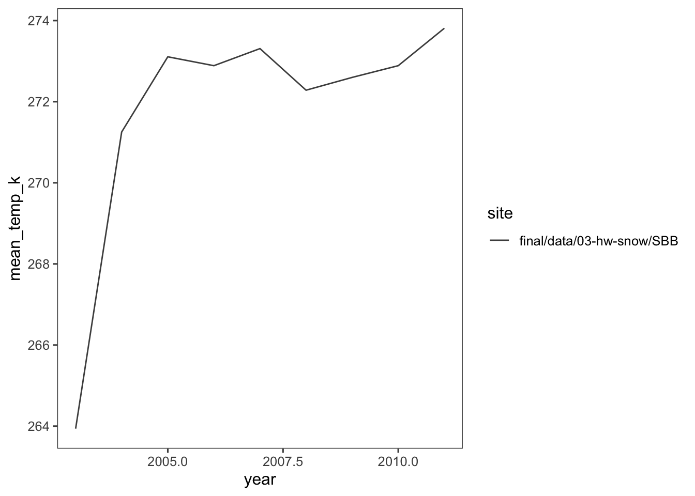
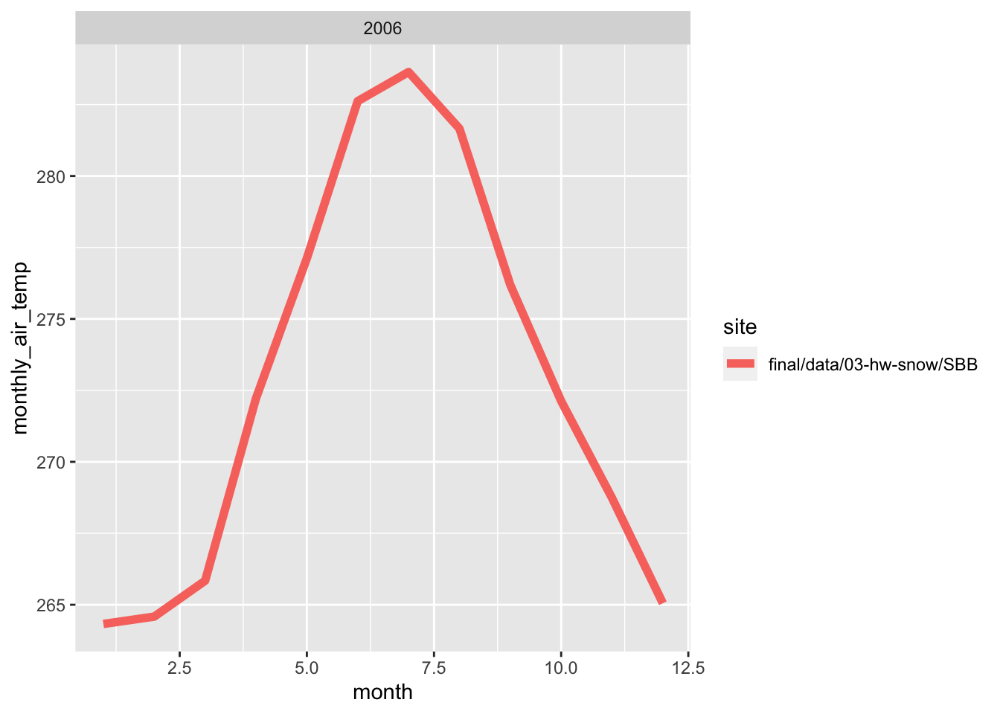
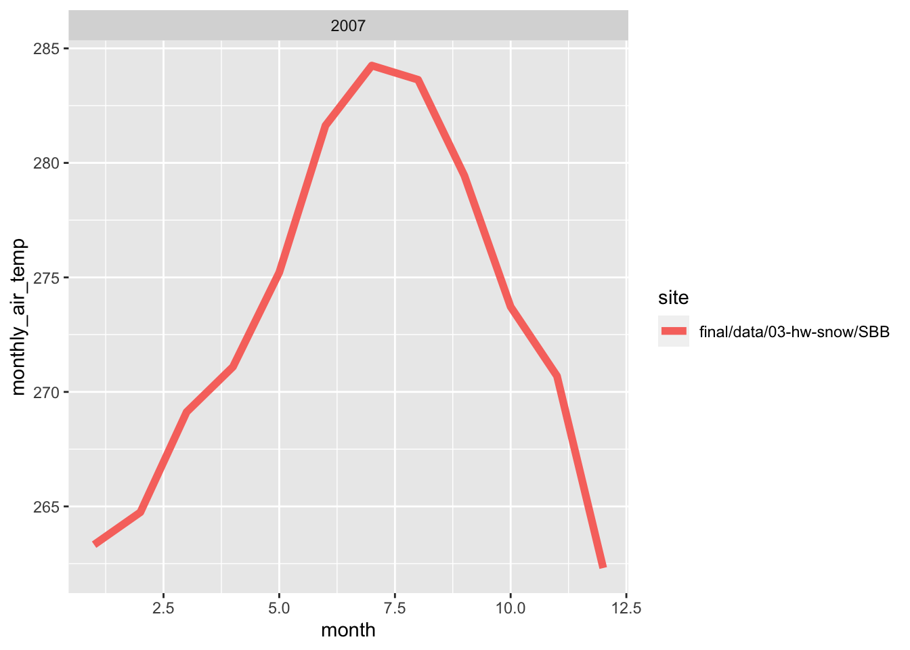
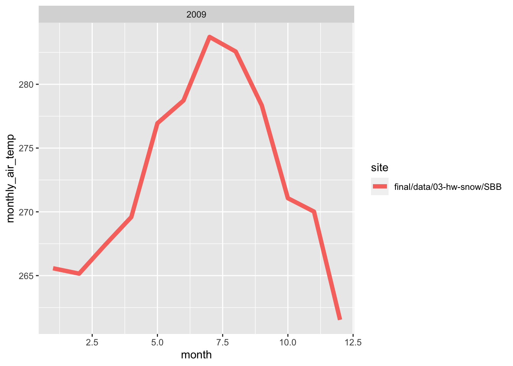
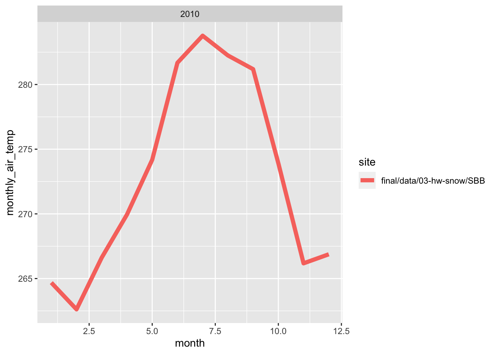

Chapter 2 Snow Data Example
In this assignment, I explored web scraping, different functions and iterations by using a data set from the Center for Snow and Avalanche Studies Website and read a table in. This table contains links to data I want and to programatically download for three sites. I don’t know much about these sites, but they contain incredibly rich snow, temperature, and precip data.
2.1 Reading an html
2.1.1 Extract CSV links from webpage
site_url <- 'https://snowstudies.org/archived-data/'
#Read the web url
webpage <- read_html(site_url)
#See if we can extract tables and get the data that way
tables <- webpage %>%
html_nodes('table') %>%
magrittr::extract2(3) %>%
html_table(fill = TRUE)
#That didn't work, so let's try a different approach
#Extract only weblinks and then the URLs!
links <- webpage %>%
html_nodes('a') %>%
.[grepl('24hr',.)] %>%
html_attr('href')2.2 Data Download
2.2.1 Download data in a for loop
#Grab only the name of the file by splitting out on forward slashes
splits <- str_split_fixed(links,'/',8)
#Keep only the 8th column
dataset <- splits[,8]
#generate a file list for where the data goes
file_names <- paste0('/Users/maddiebean21/Desktop/School/ESS580A7/bookdown_final/data/03-hw-snow/SASP_24hr.csv',dataset)
for(i in 1:3){
download.file(links[i],destfile=file_names[i])
}
downloaded <- file.exists(file_names)
evaluate <- !all(downloaded)2.3 Data read-in
2.3.1 Read in just the snow data as a loop
#Pattern matching to only keep certain files
snow_files <- file_names %>%
.[!grepl('SG_24',.)] %>%
.[!grepl('PTSP',.)]
empty_data <- list()
snow_data <- for(i in 1:length(snow_files)){
empty_data[[i]] <- read_csv(snow_files[i]) %>%
select(Year,DOY,Sno_Height_M)
}## Rows: 6211 Columns: 52## ── Column specification ────────────────────────────────────────────────────────
## Delimiter: ","
## dbl (52): ArrayID, Year, DOY, Hour, LoAir_Min_C, LoAir_Min_Time, LoAir_Max_C...##
## ℹ Use `spec()` to retrieve the full column specification for this data.
## ℹ Specify the column types or set `show_col_types = FALSE` to quiet this message.## Rows: 6575 Columns: 48## ── Column specification ────────────────────────────────────────────────────────
## Delimiter: ","
## dbl (48): ArrayID, Year, DOY, Hour, LoAir_Min_C, LoAir_Min_Time, LoAir_Max_C...##
## ℹ Use `spec()` to retrieve the full column specification for this data.
## ℹ Specify the column types or set `show_col_types = FALSE` to quiet this message.snow_data_full <- do.call('rbind',empty_data)
summary(snow_data_full)## Year DOY Sno_Height_M
## Min. :2003 Min. : 1.0 Min. :-3.523
## 1st Qu.:2008 1st Qu.: 92.0 1st Qu.: 0.350
## Median :2012 Median :183.0 Median : 0.978
## Mean :2012 Mean :183.1 Mean : 0.981
## 3rd Qu.:2016 3rd Qu.:274.0 3rd Qu.: 1.520
## Max. :2021 Max. :366.0 Max. : 2.905
## NA's :45542.3.2 Read in the data as a map function
#making the data as a map function
our_snow_reader <- function(file){
name = str_split_fixed(file,'/',2)[,2] %>%
gsub('_24hr.csv','',.)
df <- read_csv(file) %>%
select(Year,DOY,Sno_Height_M) %>%
mutate(site = name)
}
#creating an object with the functions
snow_data_full <- map_dfr(snow_files,our_snow_reader)## Rows: 6211 Columns: 52## ── Column specification ────────────────────────────────────────────────────────
## Delimiter: ","
## dbl (52): ArrayID, Year, DOY, Hour, LoAir_Min_C, LoAir_Min_Time, LoAir_Max_C...##
## ℹ Use `spec()` to retrieve the full column specification for this data.
## ℹ Specify the column types or set `show_col_types = FALSE` to quiet this message.## Rows: 6575 Columns: 48## ── Column specification ────────────────────────────────────────────────────────
## Delimiter: ","
## dbl (48): ArrayID, Year, DOY, Hour, LoAir_Min_C, LoAir_Min_Time, LoAir_Max_C...##
## ℹ Use `spec()` to retrieve the full column specification for this data.
## ℹ Specify the column types or set `show_col_types = FALSE` to quiet this message.summary(snow_data_full)## Year DOY Sno_Height_M site
## Min. :2003 Min. : 1.0 Min. :-3.523 Length:12786
## 1st Qu.:2008 1st Qu.: 92.0 1st Qu.: 0.350 Class :character
## Median :2012 Median :183.0 Median : 0.978 Mode :character
## Mean :2012 Mean :183.1 Mean : 0.981
## 3rd Qu.:2016 3rd Qu.:274.0 3rd Qu.: 1.520
## Max. :2021 Max. :366.0 Max. : 2.905
## NA's :45542.3.3 Plot snow data
#making an object for the yearly snow data points
snow_yearly <- snow_data_full %>%
group_by(Year,site) %>%
summarize(mean_height = mean(Sno_Height_M,na.rm=T))## `summarise()` has grouped output by 'Year'. You can override using the `.groups` argument.#plotting the yearly snow data
ggplot(snow_yearly,aes(x=Year,y=mean_height,color=site)) +
geom_point() +
ggthemes::theme_few() +
ggthemes::scale_color_few()+
labs(x="Mean Height", y="Year", title="Yearly Snow Data")## Warning: Removed 2 rows containing missing values (geom_point).2.4 Extracting the meteorological data URLs
I used the rvest package to get the URLs for the SASP forcing and SBSP_forcing meteorological datasets.
#creating values for the meteorological data URLs
links_hw <- webpage %>%
html_nodes('a') %>%
.[grepl('forcing',.)] %>%
html_attr('href')
links_hw## [1] "https://snowstudies.org/wp-content/uploads/2022/02/SBB_SASP_Forcing_Data.txt"
## [2] "https://snowstudies.org/wp-content/uploads/2022/02/SBB_SBSP_Forcing_Data.txt"2.5 Download the meteorological data.
Next, I used the download_file and str_split_fixed commands, along with a for loop, to download the data and saved it in our data folder.
# grab only the name of the file by splitting out on forward slashes
splits_hw <- str_split_fixed(links_hw, '/', 8)
forcingdataset <- splits_hw[,8] %>%
gsub('.txt','',.)
file_names_hw <- paste0('/Users/maddiebean21/Desktop/School/ESS580A7/bookdown_final/data/03-hw-snow/SBB_SASP_Forcing_Data', forcingdataset)
# creating a for loop
for(i in 1:length(file_names_hw)){
download.file(links_hw[i], destfile=file_names_hw[i])
}
file_names_hw## [1] "/Users/maddiebean21/Desktop/School/ESS580A7/bookdown_final/data/03-hw-snow/SBB_SASP_Forcing_DataSBB_SASP_Forcing_Data"
## [2] "/Users/maddiebean21/Desktop/School/ESS580A7/bookdown_final/data/03-hw-snow/SBB_SASP_Forcing_DataSBB_SBSP_Forcing_Data"2.6 Custom function writing
I wrote a custom function in order to read in the data and append a site column to the data.
# this code grabs the variable names from the metadata pdf file
library(pdftools)## Using poppler version 20.12.1q3_headers <- pdf_text('https://snowstudies.org/wp-content/uploads/2022/02/Serially-Complete-Metadata-text08.pdf') %>%
readr::read_lines(.) %>%
trimws(.) %>%
str_split_fixed(.,'\\.',2) %>%
.[,2] %>%
.[1:26] %>%
str_trim(side = "left")
q3_headers## [1] "year"
## [2] "month"
## [3] "day"
## [4] "hour"
## [5] "minute"
## [6] "second"
## [7] "precip [kg m-2 s-1]"
## [8] "sw down [W m-2]"
## [9] "lw down [W m-2]"
## [10] "air temp [K]"
## [11] "windspeed [m s-1]"
## [12] "relative humidity [%]"
## [13] "pressure [Pa]"
## [14] "specific humidity [g g-1]"
## [15] "calculated dewpoint temperature [K]"
## [16] "precip, WMO-corrected [kg m-2 s-1]"
## [17] "air temp, corrected with Kent et al. (1993) [K]"
## [18] "air temp, corrected with Anderson and Baumgartner (1998)[K]"
## [19] "air temp, corrected with Nakamura and Mahrt (2005) [K]"
## [20] "air temp, corrected with Huwald et al. (2009) [K]"
## [21] "qc code precip"
## [22] "qc code sw down"
## [23] "qc code lw down"
## [24] "qc code air temp"
## [25] "qc code wind speed"
## [26] "qc code relhum"#creating a function
q3_reader <- function(file){
name = str_split_fixed(file, '/', 2)[,2]
name2 = str_split_fixed(file, '_', 4)[,2]
q3test = read.delim(file, header = FALSE, sep ="", col.names = q3_headers, skip = 4) %>%
select(1:14) %>%
mutate(site=name2)
}2.7 Summary of meteorlogical files
I used the map function to read in both meteorological files and then displayed a summary of my tibble.
#reading in the forcing data
forcing_data_full <- map_dfr(file_names_hw, q3_reader)
summary(forcing_data_full)## year month day hour minute
## Min. :2003 Min. : 1.000 Min. : 1.00 Min. : 0.00 Min. :0
## 1st Qu.:2005 1st Qu.: 3.000 1st Qu.: 8.00 1st Qu.: 5.75 1st Qu.:0
## Median :2007 Median : 6.000 Median :16.00 Median :11.50 Median :0
## Mean :2007 Mean : 6.472 Mean :15.76 Mean :11.50 Mean :0
## 3rd Qu.:2009 3rd Qu.: 9.000 3rd Qu.:23.00 3rd Qu.:17.25 3rd Qu.:0
## Max. :2011 Max. :12.000 Max. :31.00 Max. :23.00 Max. :0
## second precip..kg.m.2.s.1. sw.down..W.m.2. lw.down..W.m.2.
## Min. :0 Min. :0.000e+00 Min. :-9999.000 Min. :-9999.0
## 1st Qu.:0 1st Qu.:0.000e+00 1st Qu.: -3.510 1st Qu.: 173.4
## Median :0 Median :0.000e+00 Median : -0.344 Median : 231.4
## Mean :0 Mean :3.838e-05 Mean :-1351.008 Mean :-1325.7
## 3rd Qu.:0 3rd Qu.:0.000e+00 3rd Qu.: 294.900 3rd Qu.: 272.2
## Max. :0 Max. :6.111e-03 Max. : 1341.000 Max. : 365.8
## air.temp..K. windspeed..m.s.1. relative.humidity.... pressure..Pa.
## Min. :242.1 Min. :-9999.000 Min. : 0.011 Min. :63931
## 1st Qu.:265.8 1st Qu.: 0.852 1st Qu.: 37.580 1st Qu.:63931
## Median :272.6 Median : 1.548 Median : 59.910 Median :65397
## Mean :272.6 Mean : -790.054 Mean : 58.891 Mean :65397
## 3rd Qu.:279.7 3rd Qu.: 3.087 3rd Qu.: 81.600 3rd Qu.:66863
## Max. :295.8 Max. : 317.300 Max. :324.800 Max. :66863
## specific.humidity..g.g.1. site
## Min. :0.000000 Length:138336
## 1st Qu.:0.001744 Class :character
## Median :0.002838 Mode :character
## Mean :0.003372
## 3rd Qu.:0.004508
## Max. :0.014780##Average yearly temperature
I made a line plot of mean temp by year by site (using the air temp [K] variable). What is suspicious about this data is temperature variation at the beginning of the graph, especially since the temperature is in Kelvin. This eludes that temperature was most likely not collected in the earlier years.
#creating an object to plot, grabbing the mean temperature by year by site
q5_yearly <- forcing_data_full %>%
group_by(year,site) %>%
summarize(mean_temp_k = mean(air.temp..K.,na.rm=T))## `summarise()` has grouped output by 'year'. You can override using the `.groups` argument.#plotting the mean temperature by year by site
ggplot(q5_yearly) +
geom_line(aes(x=year,y=mean_temp_k,color=site)) +
ggthemes::theme_few() +
ggthemes::scale_color_few()
What is suspicious about this data is temperature variation at the beginning of the graph, especially since the temperature is in Kelvin. This eludes that temperature was most likely not collected in the earlier years.
2.8 Monthy average temperature plot
Here, i wrote a function in order to make line plots of monthly average temperature at each site for a given year. I used a for loop to make these plots for 2005 to 2010. Both sites follow the same trend for each month, however, the SBSP site is never warmer than SASP site. There are times where are almost the same temperature, but SBSP never exceeds SASP.
#creating a function for the monthly average temperature
forcingmonthyear <- function(forcing_data_full, year){
monthlytemp<-forcing_data_full %>%
group_by(month,year,site) %>%
summarize(monthly_air_temp = mean(air.temp..K.,na.rm=T)) %>%
filter(yr == year)
#plotting the function
plots <- ggplot(monthlytemp, aes(x = month, y = monthly_air_temp, color = site)) +
geom_line(size=2)+
facet_wrap(~year)
labs(title= monthlytemp$year,
x = "Month",
y = "Temperature (K)")
print(plots)
}
years <- c(2005,2006,2007,2008,2009,2010)
#creating a for loop
for (yr in years) {
forcingmonthyear(forcing_data_full, year)
}## `summarise()` has grouped output by 'month', 'year'. You can override using the `.groups` argument.
## `summarise()` has grouped output by 'month', 'year'. You can override using the `.groups` argument.## `summarise()` has grouped output by 'month', 'year'. You can override using the `.groups` argument.
## `summarise()` has grouped output by 'month', 'year'. You can override using the `.groups` argument.
## `summarise()` has grouped output by 'month', 'year'. You can override using the `.groups` argument.## `summarise()` has grouped output by 'month', 'year'. You can override using the `.groups` argument.
2.9 Average daily precipitation
For this graph, I grouped the data by day by site to get the daily temperature.
# making an object for daily temperature
dailytemp<-forcing_data_full %>%
group_by(day,site) %>%
summarize(daily_air_temp = mean(air.temp..K.,na.rm=T))## `summarise()` has grouped output by 'day'. You can override using the `.groups` argument.#plotting bonus
ggplot(dailytemp, aes(x=day, y=daily_air_temp, color=site))+
geom_line()+
labs(x='Day of the Month', y='Daily Air Temperature', title = "Daily Temperature")